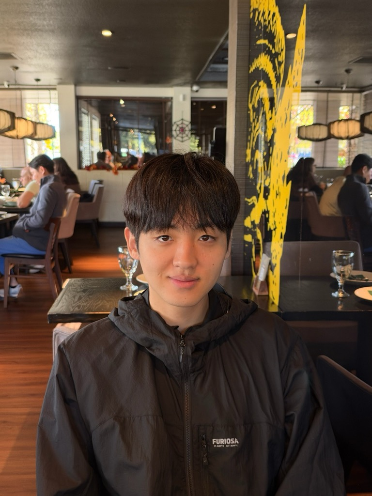

Wonjun Kang 강원준
Member of Technical Staff · AI Research Lead · FuriosaAI
I am a Member of Technical Staff at FuriosaAI1, where I lead the AI Research Team. I received my Ph.D. in Electrical and Computer Engineering from Seoul National University, advised by Prof. Nam Ik Cho. Before that, I received my B.S. from the same department.
1 FuriosaAI closed a $620M Series D at a $2.9B valuation in October 2026. Blog · Bloomberg
News
- Sep 2026
- Two papers (AsyncOPD, EfficientRollout) accepted to NeurIPS 2026.
- Aug 2026
- Received my Ph.D. from Seoul National University.
- May 2026
- Two papers (ReJump, LoSA) accepted to ICML 2026.
- Jan 2026
- Two papers (ParallelBench, Draft-based Approximate Inference) accepted to ICLR 2026.
Projects
Developed a pipeline of computer vision models (text detection and recognition) deployed on Furiosa's Gen 1 Vision NPU.
Publications
(* equal contribution, † equal advising)
My research interests are broad, with first-authored publications spanning Machine Learning (NeurIPS, ICML, ICLR), Computer Vision (ECCV, WACV), and Natural Language Processing (COLM, ACL, EACL).
Work Experience
Member of Technical Staff, AI Research Lead
June 2021 ~ Present
Education
Ph.D. in Electrical and Computer Engineering
Mar 2020 ~ Aug 2026
B.S. in Electrical and Computer Engineering
GPA: 4.00/4.30 (Summa Cum Laude)
Military leave: 2.5 years
GPA: 4.00/4.30 (Summa Cum Laude)
Military leave: 2.5 years
Mar 2014 ~ Feb 2020
Mar 2011 ~ Feb 2014
Academic Services
Reviewer: NeurIPS, ICML, ICLR, COLM, ACL ARR, AAAI, TMLR